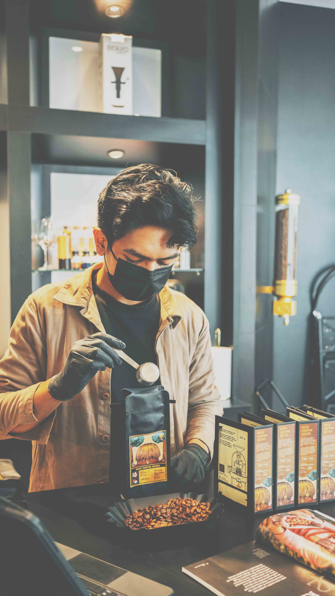
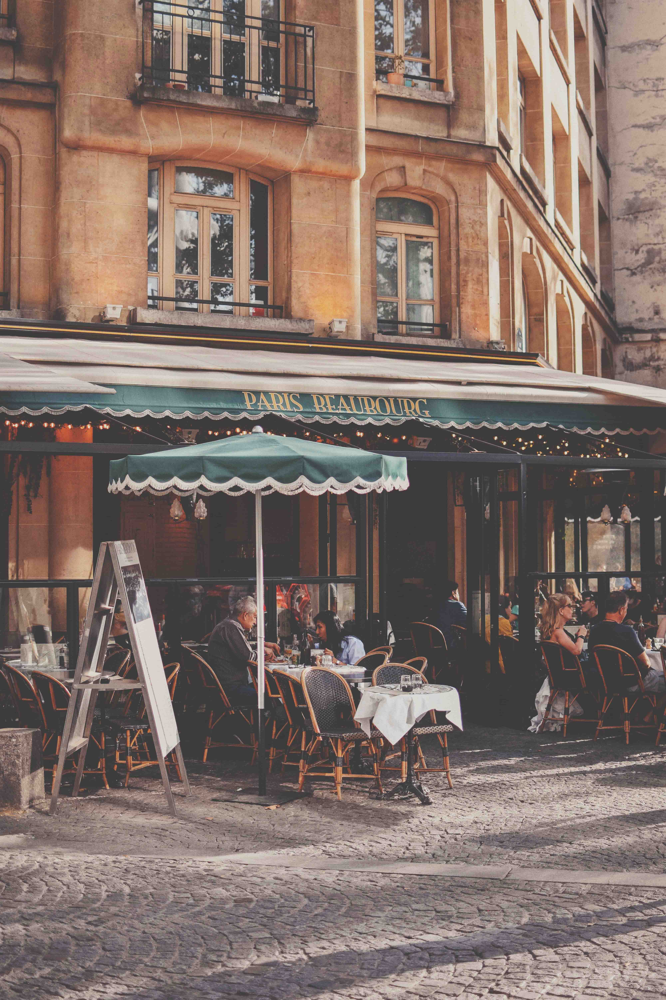

ABOUT US
NATURAL KITCHEN は、心と体にやさしいオーガニックフードとドリンクを提供するカフェです。私たちは、自然の恵みを大切にし、厳選したオーガニック食材を使用したメニューで、皆さまに健康的で美味しいひとときをお届けしています。

店内は木の温もりを感じる落ち着いた空間で、ナチュラルな雰囲気に包まれながら、ゆったりとした時間を過ごしていただけます。カラダに優しいオーガニックコーヒーやハーブティー、季節の食材を使ったこだわりのスムージー、新鮮な野菜をふんだんに使用したサラダやプレートメニューなど、心も満たされる料理をご用意しています。

忙しい日常の中で、少しだけ立ち止まり、自然の味わいを楽しむひとときはいかがでしょうか。NATURAL KITCHEN で、オーガニックの美味しさと、心地よい時間をお楽しみください。
| 店名 | NATURAL KITCHEN |
| 設立 | 2015年8月 |
| 代表取締役 | Napoleon Dynamite |
| 所在地 | 〒150-0021 東京都渋谷区恵比寿西1-2-3 |
| アクセス | 東急東横線「代官山」駅、1番出口より南へ徒歩6分 |
| 電話/FAX | 03-0000-0000/03-0000-0000 |
| メール | info@example.com |
| 従業員 | 25名 |